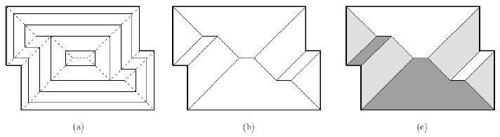

), respectively.
Now we assume that P
is on the XY plane, and P
is shrunk at unit speed while moving upward (+Z-direction) at unit speed. Then P
traces a three dimensional polyhedral surface, called terrain, and SK(P
) can be seen as the projection of the edges of this terrain onto the XY plane. From the definition, each face of this terrain lies inside a plane that makes a dihedral angle 45º with XY plane. Another fact for this terrain is that each of its faces is bounded by at least one edge of P
. We call this terrain the roof of the polygon P
. For instance, Figure 1 (c) shows the roof. The height of a point q
on the roof is the altitude, i.e., distance between q
and its projected point on the XY plane. The height of a roof is the maximum height of points on the roof.
Your task is to compute the height of the roof of the input rectilinear polygon P
.

Figure 1
Your program is to read the input from standard input. The input consists of T
test cases. The number of test cases T
is given in the first line of the input. Each test case starts with a line containing an integer n
, the number of vertices of the input polygon P
,
4 n1, 000
. In the next line, (x, y)
-coordinates of the n
vertices of P
are given according to the counterclockwise order. The first pair of integers is x
and y
coordinates of the first vertex of P
, and the second pair is x
and y
coordinates of the second vertex of P
, and so on. The coordinates are separated by a single space, and are positive integer values between 1 and 100,000, both inclusive.
n1, 000
. In the next line, (x, y)
-coordinates of the n
vertices of P
are given according to the counterclockwise order. The first pair of integers is x
and y
coordinates of the first vertex of P
, and the second pair is x
and y
coordinates of the second vertex of P
, and so on. The coordinates are separated by a single space, and are positive integer values between 1 and 100,000, both inclusive.
Your program is to write to standard output. Print exactly one line for each test case. For each test case, print the height of the roof of P
with exactly one digit in the fraction part. The following shows sample input and output for three test cases.
3
4
1 1 4 1 4 4 1 4
6
4 1 8 1 8 6 1 6 1 4 4 4
14
1 1 4 1 4 2 7 2 7 1 11 1 11 10 8 10 8 8
1 8 1 6 3 6 3 4 1 4
1.5
2.0
3.0